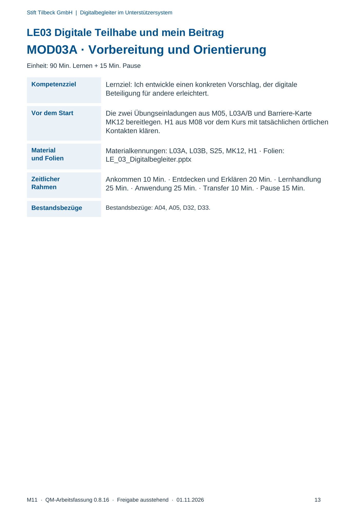
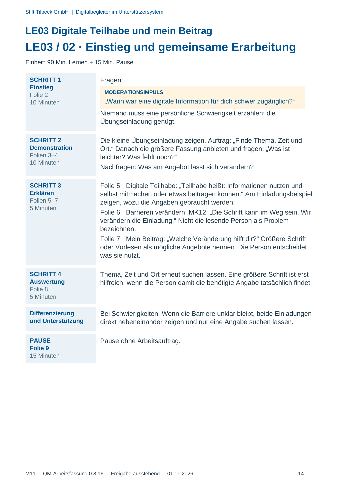
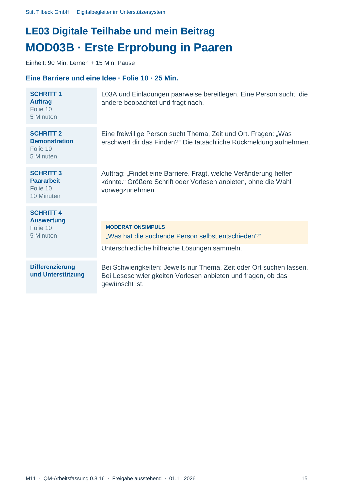
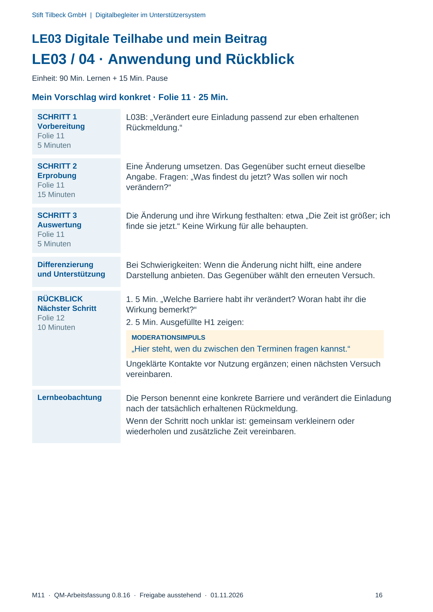

M11 · Originalseite 13, 14, 15, 16
Durchführungshilfe
Gezielte Original-Druckauswahl.
Fragen und Ankreuzfelder werden auf dem Ausdruck bearbeitet. Die Lesefassung speichert keine Antworten.
Lesefassung · Seite 13
Stift Tilbeck GmbH | Digitalbegleiter im Unterstützersystem
M11 · QM-Arbeitsfassung 0.8.16 · Freigabe ausstehend · 01.11.2026 13
LE03 Digitale Teilhabe und mein Beitrag
MOD03A · Vorbereitung und Orientierung
Einheit: 90 Min. Lernen + 15 Min. Pause
Kompetenzziel Lernziel: Ich entwickle einen konkreten Vorschlag, der digitale
Beteiligung für andere erleichtert.
Vor dem Start Die zwei Übungseinladungen aus M05, L03A/B und Barriere-Karte
MK12 bereitlegen. H1 aus M08 vor dem Kurs mit tatsächlichen örtlichen
Kontakten klären.
Material
und Folien
Materialkennungen: L03A, L03B, S25, MK12, H1 · Folien:
LE_03_Digitalbegleiter.pptx
Zeitlicher
Rahmen
Ankommen 10 Min. · Entdecken und Erklären 20 Min. · Lernhandlung
25 Min. · Anwendung 25 Min. · Transfer 10 Min. · Pause 15 Min.
Bestandsbezüge Bestandsbezüge: A04, A05, D32, D33.
Originalseite ansehen

Lesefassung · Seite 14
Stift Tilbeck GmbH | Digitalbegleiter im Unterstützersystem
M11 · QM-Arbeitsfassung 0.8.16 · Freigabe ausstehend · 01.11.2026 14
LE03 Digitale Teilhabe und mein Beitrag
LE03 / 02 · Einstieg und gemeinsame Erarbeitung
Einheit: 90 Min. Lernen + 15 Min. Pause
SCHRITT 1
Einstieg
Folie 2
10 Minuten
Fragen:
MODERATIONSIMPULS
„Wann war eine digitale Information für dich schwer zugänglich?“
Niemand muss eine persönliche Schwierigkeit erzählen; die
Übungseinladung genügt.
SCHRITT 2
Demonstration
Folien 3–4
10 Minuten
Die kleine Übungseinladung zeigen. Auftrag: „Finde Thema, Zeit und
Ort.“ Danach die größere Fassung anbieten und fragen: „Was ist
leichter? Was fehlt noch?“
Nachfragen: Was am Angebot lässt sich verändern?
SCHRITT 3
Erklären
Folien 5–7
5 Minuten
Folie 5 · Digitale Teilhabe: „Teilhabe heißt: Informationen nutzen und
selbst mitmachen oder etwas beitragen können.“ Am Einladungsbeispiel
zeigen, wozu die Angaben gebraucht werden.
Folie 6 · Barrieren verändern: MK12: „Die Schrift kann im Weg sein. Wir
verändern die Einladung.“ Nicht die lesende Person als Problem
bezeichnen.
Folie 7 · Mein Beitrag: „Welche Veränderung hilft dir?“ Größere Schrift
oder Vorlesen als mögliche Angebote nennen. Die Person entscheidet,
was sie nutzt.
SCHRITT 4
Auswertung
Folie 8
5 Minuten
Thema, Zeit und Ort erneut suchen lassen. Eine größere Schrift ist erst
hilfreich, wenn die Person damit die benötigte Angabe tatsächlich findet.
Differenzierung
und Unterstützung
Bei Schwierigkeiten: Wenn die Barriere unklar bleibt, beide Einladungen
direkt nebeneinander zeigen und nur eine Angabe suchen lassen.
PAUSE
Folie 9
15 Minuten
Pause ohne Arbeitsauftrag.
Originalseite ansehen

Lesefassung · Seite 15
Stift Tilbeck GmbH | Digitalbegleiter im Unterstützersystem
M11 · QM-Arbeitsfassung 0.8.16 · Freigabe ausstehend · 01.11.2026 15
LE03 Digitale Teilhabe und mein Beitrag
MOD03B · Erste Erprobung in Paaren
Einheit: 90 Min. Lernen + 15 Min. Pause
Eine Barriere und eine Idee · Folie 10 · 25 Min.
SCHRITT 1
Auftrag
Folie 10
5 Minuten
L03A und Einladungen paarweise bereitlegen. Eine Person sucht, die
andere beobachtet und fragt nach.
SCHRITT 2
Demonstration
Folie 10
5 Minuten
Eine freiwillige Person sucht Thema, Zeit und Ort. Fragen: „Was
erschwert dir das Finden?“ Die tatsächliche Rückmeldung aufnehmen.
SCHRITT 3
Paararbeit
Folie 10
10 Minuten
Auftrag: „Findet eine Barriere. Fragt, welche Veränderung helfen
könnte.“ Größere Schrift oder Vorlesen anbieten, ohne die Wahl
vorwegzunehmen.
SCHRITT 4
Auswertung
Folie 10
5 Minuten
MODERATIONSIMPULS
„Was hat die suchende Person selbst entschieden?“
Unterschiedliche hilfreiche Lösungen sammeln.
Differenzierung
und Unterstützung
Bei Schwierigkeiten: Jeweils nur Thema, Zeit oder Ort suchen lassen.
Bei Leseschwierigkeiten Vorlesen anbieten und fragen, ob das
gewünscht ist.
Originalseite ansehen

Lesefassung · Seite 16
Stift Tilbeck GmbH | Digitalbegleiter im Unterstützersystem
M11 · QM-Arbeitsfassung 0.8.16 · Freigabe ausstehend · 01.11.2026 16
LE03 Digitale Teilhabe und mein Beitrag
LE03 / 04 · Anwendung und Rückblick
Einheit: 90 Min. Lernen + 15 Min. Pause
Mein Vorschlag wird konkret · Folie 11 · 25 Min.
SCHRITT 1
Vorbereitung
Folie 11
5 Minuten
L03B: „Verändert eure Einladung passend zur eben erhaltenen
Rückmeldung.“
SCHRITT 2
Erprobung
Folie 11
15 Minuten
Eine Änderung umsetzen. Das Gegenüber sucht erneut dieselbe
Angabe. Fragen: „Was findest du jetzt? Was sollen wir noch
verändern?“
SCHRITT 3
Auswertung
Folie 11
5 Minuten
Die Änderung und ihre Wirkung festhalten: etwa „Die Zeit ist größer; ich
finde sie jetzt.“ Keine Wirkung für alle behaupten.
Differenzierung
und Unterstützung
Bei Schwierigkeiten: Wenn die Änderung nicht hilft, eine andere
Darstellung anbieten. Das Gegenüber wählt den erneuten Versuch.
RÜCKBLICK
Nächster Schritt
Folie 12
10 Minuten
1. 5 Min. „Welche Barriere habt ihr verändert? Woran habt ihr die
Wirkung bemerkt?“
2. 5 Min. Ausgefüllte H1 zeigen:
MODERATIONSIMPULS
„Hier steht, wen du zwischen den Terminen fragen kannst.“
Ungeklärte Kontakte vor Nutzung ergänzen; einen nächsten Versuch
vereinbaren.
Lernbeobachtung Die Person benennt eine konkrete Barriere und verändert die Einladung
nach der tatsächlich erhaltenen Rückmeldung.
Wenn der Schritt noch unklar ist: gemeinsam verkleinern oder
wiederholen und zusätzliche Zeit vereinbaren.
Originalseite ansehen
